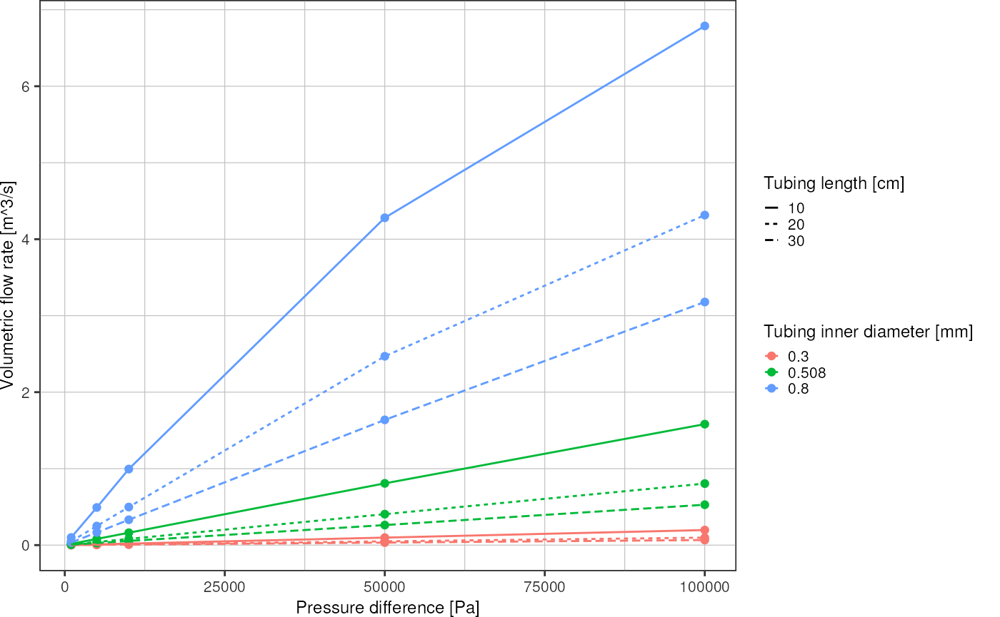
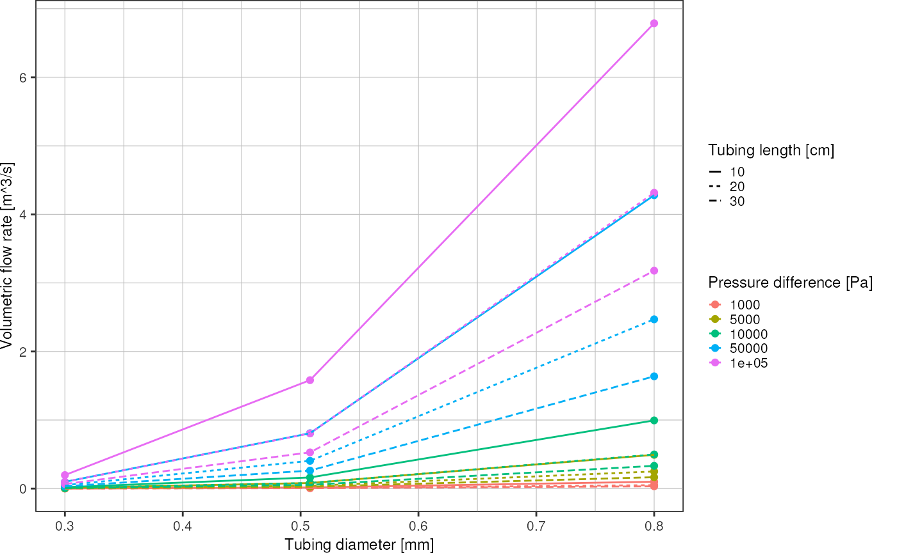

COMSOL Simulations
comsol.RmdRead the COMSOL file
d <- readr::read_table("data/comsol/tubing_line_integration_spfU", skip = 1, col_names = c("radius", "length", "pressure", "flowrate"))
#>
#> ── Column specification ────────────────────────────────────────────────────────
#> cols(
#> radius = col_double(),
#> length = col_double(),
#> pressure = col_double(),
#> flowrate = col_double()
#> )
d
#> # A tibble: 45 × 4
#> radius length pressure flowrate
#> <dbl> <dbl> <dbl> <dbl>
#> 1 0.15 10 1000 0.00197
#> 2 0.15 10 5000 0.00985
#> 3 0.15 10 10000 0.0197
#> 4 0.15 10 50000 0.0982
#> 5 0.15 10 100000 0.197
#> 6 0.15 20 1000 0.00100
#> 7 0.15 20 5000 0.00500
#> 8 0.15 20 10000 0.00997
#> 9 0.15 20 50000 0.0494
#> 10 0.15 20 100000 0.0977
#> # … with 35 more rows
d %>%
ggplot(aes(x = pressure, y = flowrate, color = factor(radius*2))) +
geom_point() +
geom_line(aes(linetype = factor(length))) +
labs(x = "Pressure difference [Pa]",
y = "Volumetric flow rate [m^3/s]",
linetype = "Tubing length [cm]",
color = "Tubing inner diameter [mm]") +
theme_pretty()
d %>%
ggplot(aes(x = radius*2, y = flowrate, color = factor(pressure))) +
geom_point() +
geom_line(aes(linetype = factor(length))) +
labs(x = "Tubing diameter [mm]",
y = "Volumetric flow rate [m^3/s]",
linetype = "Tubing length [cm]",
color = "Pressure difference [Pa]") +
theme_pretty()